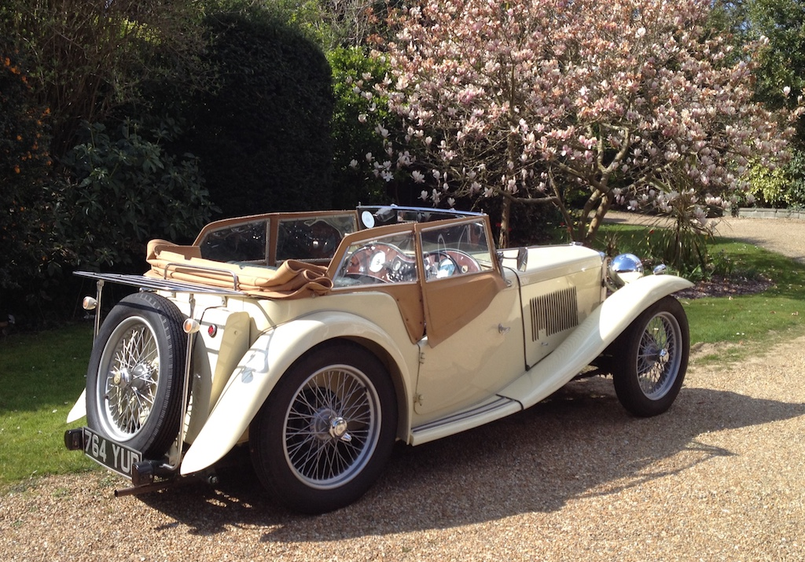

First Outing After Lockdown - April
Due to the current Covid-19 restrictions, the last time that I took the TC out for a run was in November last year. On Wednesday 14th April I had to deliver something to Victoria Grand and the sun was shining. So I started the TC and drove down to Lancing, along the coast through Worthing and up to Victoria Grand. Having delivered the documents and waved to Dad from his window, I drove up to Washington and back home. A total of 26 miles. It was wonderful. The only down-side was that the carburettors were leaking fuel!
Camelia Botna
Another sunny day (Tuesday 20th April) with hardly a breath of wind. So we decided to go to Camelia Botna for morning coffee and to look around the plant nursery; a slightly belated birthday outing. We went via Ashurst and then returned via Henfield, arriving home just in time to prepare lunch after a round trip of 21 miles. Both this and the previous run are a little short for inclusion in this record, but after not taking the TC for so long they are quite significant. The TC ran well, although the tick-over was a little high. So later in the afternoon I did some adjustments. In spite of having tightened the bolts on the carburettors, a few had worked loose again.
MGCC Spring Run to Leonardslee Gardens
When we left in the TC at ten o'clock on Sunday 23rd May it was raining! However, the rain stopped on our way to Ashington, where we met up with those at the southern start for the run at the Red Lion. We sat with Chris and Maureen and had coffee and cake before setting off at 10:45. We left the hood up, although it didn't rain again until we had parked at Leonardslee. It was a 30 mile route down some narrow and bumpy lanes, but was enjoyable and the car ran well.
There were due to be 100 cars on the run, approximately half starting from Ashington and half from Leatherhead. The south car park at Leonardslee was reserved for the MGCC. After lunch in the cafe and a walk around the garden we left at about three o'clock, getting home in time for a cup of tea. This time we had the hood down. We did a total of 51 miles. Unfortunately there was still a smell of petrol when we got home. My use of threadlock does not seem to have been completely successful.
Sussex Wanderers, Ashington to Maplehurst
This was the postponed barbecue run. It was essentially the same route that was used for the Spring Run, except that one of the roads was closed and we stopped at Maplehurst where we had a good barbecue outside. Although it was cloudy when I left home, the sun came out before we left the Red Lion in Ashington. Overall the TC did 41 miles, but I had to tighten the 'hold-up' bolts on the carburettors when I got home.